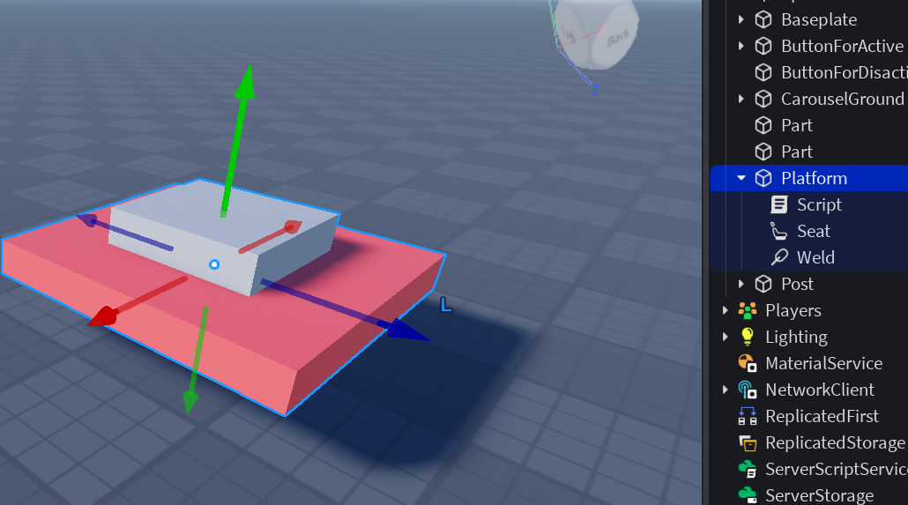
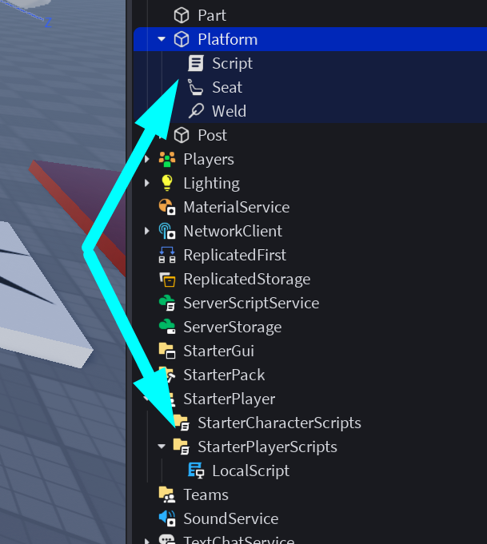
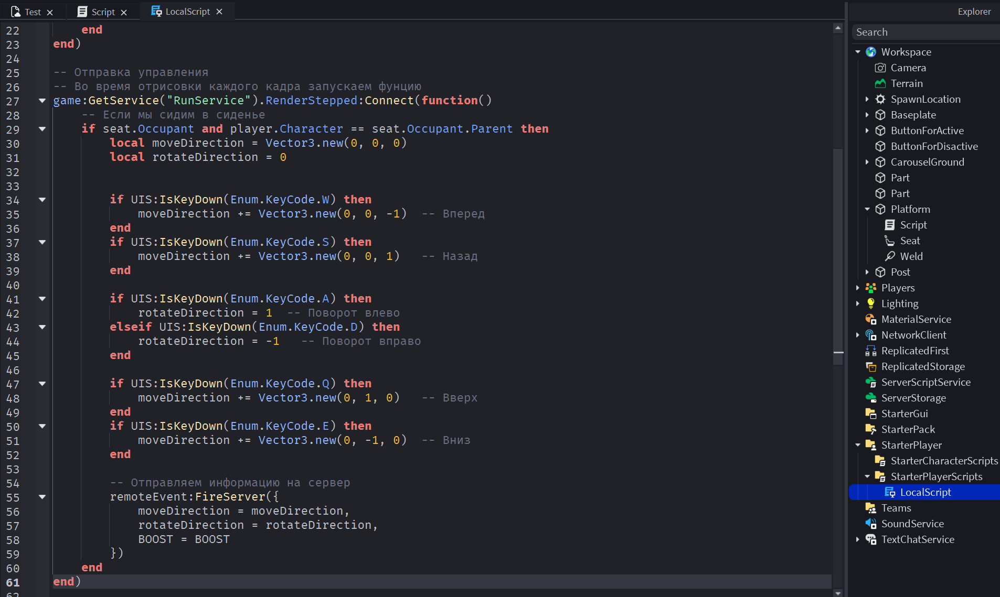
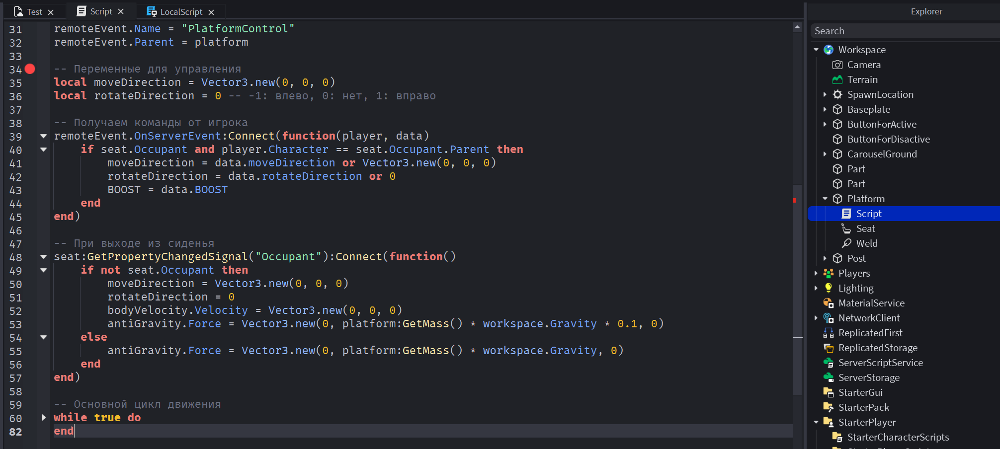
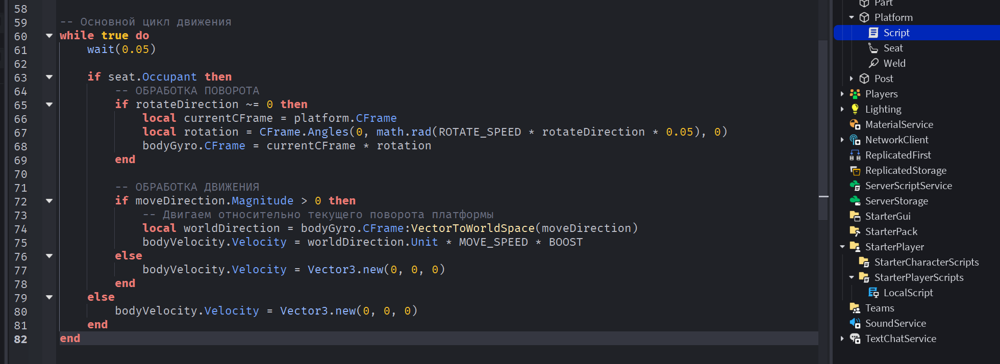
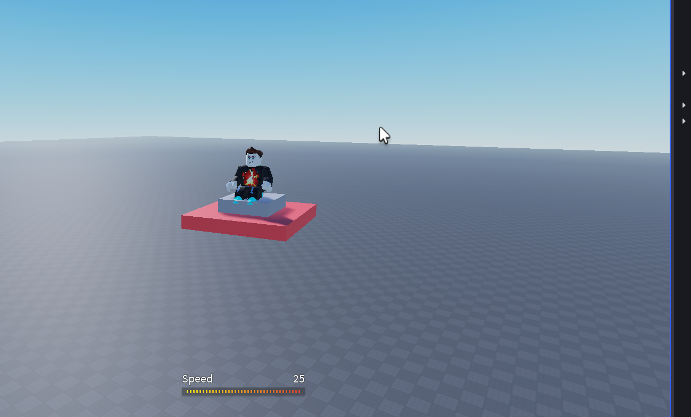

Создание игр в Roblox Studio
Создаем "Ковер самолет"!
На сегодняшнем занятии мы создадим летающую платформу, которой можно будет управлять!
Чем она у вас станет - самолетом, ковром, НЛО - решать вам))
Готовим объекты
Создадим платформу и прикрепим к неё сиденье
Создаем скрипт
BIG Программирование
Чтобы данный летательный аппарат работал корректно, нам придется запрограммировать целых два скрипта!
Первый будет внутри платформы, он будет отвечать за его движение, баланс, повороты и физические характристики.
Второй скрипт будет отвечать за отслеживание нажатий кнопок клавиатуры.
Local Script

RenderStepped - это событие (event) в Roblox, которое срабатывает КАЖДЫЙ КАДР перед отрисовкой изображения на экране.
ЧАСТО используется для настройки плавного управления объектами (машины, самолеты и т.д.)
Script в Platform
Нам понадобятся новые специальные объекты:
- BodyVelocity - Контроллер СКОРОСТИ. Заставляет объект двигаться с определенной СКОРОСТЬЮ (независимо от физики). // (Как круиз-контроль в машине - задаешь скорость, машина ее поддерживает)
- BodyGyro - Контроллер ОРИЕНТАЦИИ. Заставляет объект ПОВОРАЧИВАТЬСЯ к заданной ориентации. (Как автопилот в самолете - держит определенный курс)
- BodyForce - Контроллер СИЛЫ. Прикладывает ПОСТОЯННУЮ СИЛУ к объекту // (как физическое воздействие). // (Как реактивный двигатель - постоянно толкает с определенной силой)
Внимательно изучаем комментарии кода
 Если код был написан без ошибок - платформа (ковер) полетит!
Домашкаа 🤖
Выполнить задания от преподавателя